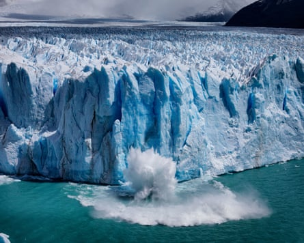

One of the few stable glaciers in a warming world, Perito Moreno, in Santa Cruz province, Argentina , is now undergoing a possibly irreversible retreat, scientists say.
Over the past seven years, it has lost 1.92 sq km (0.74 sq miles) of ice cover and its thickness is decreasing by up to 8 metres (26 ft) a year.
For decades, Perito Moreno defied the global trend of glacial retreat, maintaining an exceptional balance between snow accumulation and melting. Its dramatic calving events, when massive blocks of ice crashed into Lago Argentino, became a symbol of natural wonder, drawing millions of visitors to southern Patagonia.
Dr Lucas Ruiz , a glaciologist at the Argentine Institute of Nivology, Glaciology and Environmental Sciences, said: “The Perito Moreno is a very particular, exceptional glacier. Since records began, it stood out to the first explorers in the late 19th century because it showed no signs of retreat – on the contrary, it was advancing. And it continued to do so until 2018, when we began to see a different behaviour. Since then, its mass loss has become increasingly rapid.”
Scientists and local guides warn that the balance is beginning to shift. “The first year the glacier didn’t return to its previous year’s position was 2022. The same happened in 2023, again in 2024, and now in 2025. The truth is, the retreat continues. The glacier keeps thinning, especially along its northern margin,” said Ruiz. This sector is the farthest from tourist walkways and lies above the deepest part of Lago Argentino, the largest freshwater lake in Argentina.
Calving events at Perito Moreno, when ice collapses into the lake, are becoming louder, more frequent, and much larger.Photograph: Philipp Rohner/Getty Images/500px
The summer of 2023-24 recorded a maximum temperature of 11.2C, according to meteorological data collected by Pedro Skvarca , a geophysical engineer and the scientific director of the Glaciarium centre in El Calafate, Patagonia. Over the past 30 years, the average summer temperature rose by 1.2C, a change significant enough to greatly accelerate ice melt.
Ice thickness measurements are equally alarming. Between 2018 and 2022, the glacier was thinning at a rate of 4 metres a year. But in the past two years, that has doubled to 8 metres annually.
“Perito Moreno’s size no longer matches the current climate; it’s simply too big. It can’t withstand the heat, and the current ice input isn’t enough to compensate,” Ruiz said.
Ice that once rested on the lakebed owing to its weight, said Ruiz, had now thinned so much that it was beginning to float, as water pressure overtook the ice’s own.
With that anchor lost, the glacier’s front accelerates – not because of increased mass input from the accumulation zone, where snow compacts into ice, but because the front slides and deforms. This movement triggers a feedback loop that further weakens the structure, making the process potentially irreversible.
Xabier Blanch Gorriz , a professor in the department of civil and environmental engineering at the Polytechnic University of Catalonia, who studies ice calving at the Perito Moreno glacier front, said: “Describing the change as ‘irreversible’ is complex, because glaciers are dynamic systems. But the truth is that the current rate of retreat points to a clearly negative trend.” He added: “The glacier’s retreat and thinning are evident and have accelerated.”
Ruiz confirmed another disturbing trend reported by local guides: calving events are becoming louder, more frequent, and much larger. In April, a guide at Los Glaciares national park described watching a tower of ice the height of a 20-storey building collapse into the lake. “It’s only in the last four to six years that we’ve started seeing icebergs this size,” he told Reuters.
In January of this year, Blanch Gorriz and his team installed eight photogrammetric systems that capture images every 30 minutes, enabling the generation of 3D models of about 300 metres of the glacier front. Initial comparisons between December and June already reveal significant ice loss. Satellite images further highlight a striking retreat over just 100 days.
Today, nothing seems capable of halting the glacier’s retreat. Only a series of cooler summers and wetter winters might slow the trend, but climate projections point in the opposite direction.
“What we expect is that, at some point, Perito Moreno will lose contact with the Magallanes peninsula, which has historically acted as a stabilising buttress and slowed the glacier’s response to climate change. When that happens, we’ll likely see a catastrophic retreat to a new equilibrium position, farther back in the narrow valley,” said Ruiz.
Such a shift would represent a “new configuration” of the glacier, raising scientific questions about how this natural wonder would behave in the future. “It will be something never seen before – even farther back than what the first researchers documented in the late 19th century,” Ruiz nadded.
How long the glacier might hold that future position remains unknown. But what scientists do know is that the valley, unlike the Magallanes peninsula, would not be able to hold the glacier in place.
Perito Moreno – Latin America’s most iconic glacier and part of a Unesco world heritage site since 1981 – now joins a regrettable local trend: its neighbours, the Upsala and Viedma glaciers, have retreated at an astonishing rate over the past two decades. It is also part of a global pattern in which, as Ruiz put it, humanity is “digging the grave” of the world’s glaciers.